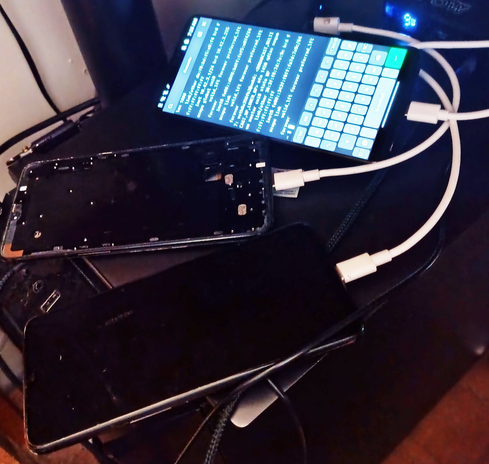
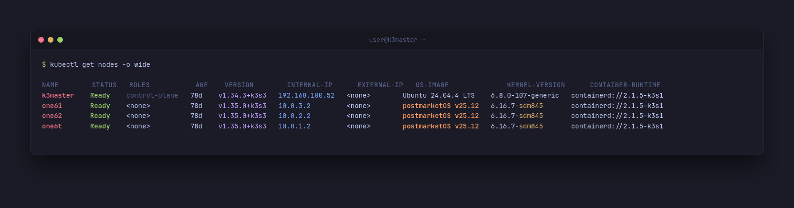
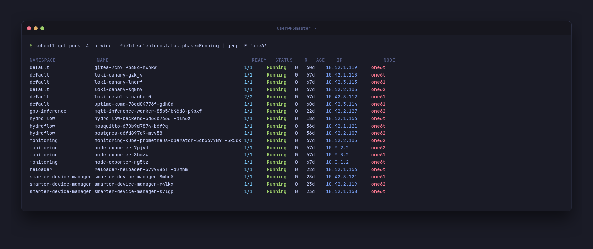

A k3s Cluster Over USB Cables: What postmarketOS and Linux Bridges Hide
Three OnePlus phones, one Lenovo laptop, no switch — and the slow education that every layer of the stack quietly resists being made into a Kubernetes node.
Three OnePlus phones charging at 70% on a powered USB hub, each one a worker node, none of them running Android anymore.
Why This Cluster Exists At All
This is not a tutorial.
This is what happens when every layer of the stack quietly refuses to behave like a server — and you make it anyway.
I had a drawer with three OnePlus phones in it — two 6s, one 6T — all shelved for the usual reasons. Cracked glass, dead modem, the kind of thing where you stop using the phone but cannot bring yourself to throw eight gigabytes of RAM and four big cores into the bin. Twenty-two gigabytes of RAM and twenty-four ARM cores, sitting unused in a drawer.
The honest part of the story is that I did not start with a clear plan. I started with the question what would it take to make these into a cluster, and only later worked out that the answer is several layers deeper than "install Linux and join a k3s node."
What I ended up with is a four-node k3s cluster where every worker is a phone, every node-to-node link is a USB cable, and there is no Ethernet switch in the picture at all. The laptop is the control plane. The phones do work. The full manifests, udev rules, netplan, and the device-tree patches live in a companion repo: github.com/ivemcfire/homelab-config.
Architecture: Before and After
Before
- Three phones in a drawer running Android, doing nothing
- One Lenovo laptop with a broken screen, running Ubuntu and used as a desktop
- No homelab to speak of
- No interest in running yet another Wi-Fi network for hardware that does not need to roam
After
- k3s control plane on the laptop (
k3master) — amd64, 8 cores, 16 GB - Three phones flashed with postmarketOS (
one6t,one62,one61) — arm64, mixed RAM - Each phone connected to the laptop with a single USB-C cable through a powered hub
- All node-to-node traffic over USB — no Wi-Fi, no Ethernet switch, no L2 broadcast domain shared between phones
- Routed
/30point-to-point links per phone, Flannel VXLAN for the pod overlay, MetalLB pinned to the laptop's WAN interface - Battery charge ceiling lowered to ~70% on every phone via device-tree patch, so cells do not swell on permanent AC
The resulting topology:
+---------------------------+
| k3master |
| Lenovo laptop, headless |
| wan0 192.168.100.52/24 |
| control plane + MetalLB |
+-------------+-------------+
|
+---------------+---------------+
| powered USB hub (per-port |
| current high enough to |
| actually run a phone) |
+---+---------+---------+-------+
| | |
/30 link | /30 | /30 |
10.0.1.0 | 10.0.2.0| 10.0.3.0|
| | |
+-----+---+ +---+-----+ +-+-------+
| one6t | | one62 | | one61 |
| OP 6T | | OP 6, | | OP 6, |
| 6GB | | 8GB | | 8GB |
| pmOS | | pmOS | | pmOS |
+---------+ +---------+ +---------+
Phones do not see each other directly. All east-west traffic is routed through k3master and encapsulated in VXLAN at the pod layer. That sounds like a bottleneck on paper. In practice it is fine — USB 2.0 between a phone and the laptop is faster than this cluster will ever need.
The Cloud Mindset Does Not Translate, Either
Managed Kubernetes does not remove complexity. It just moves it somewhere you do not have to look.
This build dragged it all back into view. Four things, specifically:
- The network — there is no flat L2 to lean on
- The image registry path — phones cannot pull from anywhere until NAT is wired up by hand
- The interface name — USB gadget MACs randomise on every phone reboot
- The hardware itself — nothing in the stack cooperates by default
Each became its own small story. The fixes are cheap. Finding the problem is the expensive part.
Why USB and Not Wi-Fi
Problem. A phone has Wi-Fi, Bluetooth, and a cellular modem. All three are radios. All three want to do something useful by default — associate, scan, advertise. None of those defaults survive contact with a node that is supposed to behave like a server.
Constraint. The household already has a vendor mesh router doing roaming for laptops and TVs. Standing up a parallel Wi-Fi just for cluster traffic is noise pollution and a second thing to maintain. Cellular is obviously out.
Decision. Kill every radio on every phone (nmcli radio wifi off, nmcli radio wwan off, rfkill block bluetooth) and run all node traffic over the USB-C cable that is also charging the device. One cable per phone. One physical link per node.
Trade-off. Phones are now physically tethered to the laptop and a powered hub — there is no moving them without unplugging. In exchange the cluster has zero radio surface area, no roaming surprises, and the link layer is dumb point-to-point.
The hub matters more than I expected. A laptop USB port hands out roughly 0.5 A. A phone draws closer to 1 A under load and while charging. Without a powered hub, two of the three phones would brown out under cluster traffic and disappear.
The Network: /30 Links and Why Linux Bridges Are Banned Here
Problem. Each phone is on its own physical USB link to the laptop. There is no shared L2 domain between phones.
The first instinct is obvious: put all USB interfaces into a Linux bridge on the laptop and pretend it is a switch.
It almost works.
Hosts can ping each other. Routes look correct. Nothing logs an error.
And then pods just… do not talk.
The reveal, hours later: a Linux bridge with br_netfilter loaded causes iptables to process bridged packets at both L2 and L3. The result is silent drops between cni0 and the physical interface that show up in no log and match no rule you wrote. The bridge stops being an answer the moment k3s loads its CNI. From that point on, it just drops packets quietly.
Constraint. k3s expects pods to be reachable across nodes. Flannel host-gw, the cheap default, requires all nodes on the same L2 broadcast domain to install a direct route. That assumption does not hold here either.
Decision. Two parts.
- Give every USB link its own routed
/30—10.0.1.0/30,10.0.2.0/30,10.0.3.0/30. Laptop is.1, phone is.2. Each phone is one routed hop from the control plane and zero hops from any other phone — east-west traffic transits the laptop. - Use Flannel VXLAN, not host-gw. VXLAN encapsulates pod traffic in UDP and tunnels across the routed substrate. It does not care that
one6tandone62cannot see each other at L2.
Trade-off. Every cross-phone packet pays a VXLAN encap/decap and a trip through k3master. Throughput ceiling is "as fast as USB 2.0 between a phone and the laptop," not "as fast as a switch." For a homelab, that ceiling is invisible.
What proves the network is alive is a 4×4 ping matrix from a busybox pod scheduled on every node:
$ for src in k3master one6t one62 one61; do
for dst in $M $T $S $O; do
kubectl exec nettest-$src -- ping -c 1 -W 3 $dst > /dev/null 2>&1 \
&& echo "$src -> $dst ok" \
|| echo "$src -> $dst FAIL"
done
done
k3master -> 10.42.0.x ok
k3master -> 10.42.1.x ok
k3master -> 10.42.2.x ok
k3master -> 10.42.3.x ok
one6t -> 10.42.0.x ok
one6t -> 10.42.1.x ok
... (16/16)
All sixteen pairs respond. If any one of them does not, something in the four-layer stack — interface name, /30 routing, VXLAN, nftables — is wrong. The matrix is the only honest proof.
What this looks like at the node layer, today, after months of running:

Mixed-arch cluster: amd64 control plane on the laptop, three arm64 phones on postmarketOS over USB. All four nodes Ready for 78 days. The phones' INTERNAL-IP is the laptop-side /30.
postmarketOS Has An Invisible Firewall
Problem. Network was wired up correctly. Pod-to-pod traffic between nodes still failed.
iptables -L was empty.
Traffic was still being dropped.
Routes were correct. Interfaces were up. Host-to-host pings worked. Pod-to-pod pings between nodes did not.
Constraint. postmarketOS ships with nftables rules enabled by default, with a forward chain whose policy is drop. The default ruleset only allows forwarding for usb* and wlan* patterns. Pod interfaces — cni0, flannel.1, vethXXX — match none of these and are silently dropped. None of it shows up in iptables -L, because nftables and iptables are different stacks.
Decision. On every phone, flush the nftables ruleset, disable the service, and replace the config with an empty ruleset so a reboot does not bring the rules back:
echo '#!/usr/sbin/nft -f
flush ruleset' | doas tee /etc/nftables.nft
doas nft flush ruleset
doas rc-update del nftables 2>/dev/null
Trade-off. Phones now have no host firewall at all. That is acceptable here because they are on isolated /30 links that only reach the laptop, and the laptop is the only thing that NATs them outward. In a different topology this would be reckless.
The lesson generalises beyond pmOS. If your pods cannot reach each other and iptables -L is empty, check the other firewall stack before you spend a day on CNI logs.
Stable Interface Names Or Nothing Survives a Reboot
Problem. The USB gadget driver on postmarketOS generates a fresh MAC address for the phone-side interface on every boot. The Linux kernel on the laptop then derives the interface name from that MAC — enxAABBCC.... So after every phone reboot, the laptop sees the phone under a new name. Netplan does not match. The link comes up unconfigured. k3s flannel binds to nothing.
Constraint. I cannot fix the gadget driver from inside the cluster, and I do not want to maintain a custom kernel patch on three phones for one cosmetic problem.
Decision. Two layers.
- On each phone, edit
/usr/local/bin/setup-usb-gadget.shto write a fixedhost_addranddev_addrfor the NCM function. Pinning the MAC on the phone side gives the laptop a stable identifier to match against. - On the laptop, write udev rules that rename interfaces by USB hub port path (
ID_PATH), not by MAC, with a serial filter so that an unrelated USB Ethernet dongle plugged into the same hub does not get renamed:
SUBSYSTEM=="net", ACTION=="add",
ENV{ID_PATH}=="pci-0000:00:14.0-usb-0:5.2:1.0",
ENV{ID_SERIAL}=="OnePlus*",
NAME="usb-one6t"
The interface for one6t is now always usb-one6t, regardless of MAC, regardless of insertion order, regardless of reboot.
Trade-off. I am now coupled to the physical port on the hub. Move a phone to a different hub port, the rule does not match, the interface gets a default name, the link breaks. That is a fair price for stability.
Battery Safety Is Now A Kubernetes Concern
Problem. A phone designed for daily charge cycles is now plugged in 24/7 at 100%. Lithium cells held at full charge for months swell. A swollen cell in a phone that is sitting on top of an inverter is not a problem I want to debug.
Constraint. postmarketOS does not expose a "stop charging at X percent" knob. The charge controller follows what is described in the device tree.
Decision. Patch the device-tree blob to lower voltage-max-design-microvolt from 4.4 V (0x432380 = 4,399,936 µV) to 3.8 V (0x39f740 = 3,800,000 µV). The charger then tops out at roughly 70%, which is the sweet spot for cell longevity:
doas dtc -I dtb -O dts -o /tmp/fajita.dts /boot/sdm845-oneplus-fajita.dtb
doas sed -i 's/voltage-max-design-microvolt = <0x432380>/.../' /tmp/fajita.dts
doas dtc -I dts -O dtb -o /boot/sdm845-oneplus-fajita.dtb /tmp/fajita.dts
Verify after reboot:
xxd /sys/firmware/devicetree/base/battery/voltage-max-design-microvolt
Trade-off. Each phone now has a custom DTB that I am responsible for re-patching after any pmOS upgrade that ships a new blob. In exchange I am not opening a melted phone in two years.
If the battery happens to be above 3.8 V at the moment you reboot with the new tree, the charger simply stops charging until the cell drains down to the new ceiling. That is correct behaviour and I had to convince myself of that before I trusted it.
At that point, battery chemistry stops being hardware — and becomes configuration.
MetalLB In A Mixed Cluster: Pin The Speaker
Problem. I disabled k3s ServiceLB (Klipper) at install and brought MetalLB in for L2 advertisements. With the default config, services would get a VIP, but curl would hang. ARP for the VIP went unanswered.
Constraint. MetalLB's L2 mode runs a memberlist election to pick which node "speaks" for a given VIP. In a mixed cluster, the election does not know that only k3master has a route onto the household LAN. Phones, with their /30 USB links, sometimes won the election — and then could not respond to ARP from the LAN, because they have no LAN interface at all.
Decision. Constrain the L2Advertisement to only the node that actually has the WAN interface:
spec:
ipAddressPools:
- homelab-pool
interfaces:
- wan0
nodeSelectors:
- matchLabels:
kubernetes.io/hostname: k3master
Trade-off. All inbound LB traffic now ingresses through k3master. If the laptop dies, exposed services die with it. That is true for almost every part of this cluster anyway — the laptop is the control plane, the only LAN-attached node, and the NAT for every phone. Pinning the speaker to it does not make things worse.
Design Decisions
The non-obvious calls, in one place:
- All node-to-node traffic over USB, not Wi-Fi — eliminates radio chaos, accepts physical tether to the hub
- Routed
/30per phone, no shared L2 — sidesteps Linux-bridgebr_netfiltersilent drops - Flannel VXLAN, not host-gw — host-gw silently fails to install routes when nodes are not L2-adjacent
- Flush nftables on every pmOS phone — default forward chain drops pod interfaces; invisible from
iptables -L - Stable interface names by USB port path, not MAC — gadget MAC randomises on every boot
- Pin MAC on the phone side too — gives the laptop udev a stable identifier to match
- Patch the device tree to cap charge at ~3.8 V — cell longevity is now a config problem, not a wear problem
- MetalLB L2 advert pinned to
k3masteronly — only node with a LAN interface, prevents ARP black-holes - NAT on
k3masterfor10.0.0.0/8— phones have no other path to the registry; without it nothing pulls - Powered USB hub, not direct laptop ports — two phones brown out on 0.5 A; the hub is not optional
Things That Went Wrong
The bridge that ate the cluster. First attempt put all USB interfaces into a Linux bridge on k3master. Pod traffic between hosts worked. Pod traffic between pods did not. No log line, no dropped-packet counter, nothing in tcpdump on the obvious interfaces. Took an evening to suspect br_netfilter, ten minutes to confirm, and the rest of the project to never use a bridge here again.
iptables said empty, traffic still dropped. Same symptom — pods cannot reach each other across nodes — but this time on the phones. iptables -L was clean. The network looked correct. The forward chain in nftables was the answer, and the rules were not visible from the iptables shim. Always check both stacks on pmOS.
Interface names rotated after a phone reboot. Set up Netplan with enxAABB...-shaped names from the first boot. Rebooted a phone. Netplan had nothing to apply against. No link came up. This is what drove the udev rules and the gadget MAC pinning.
The control-plane phone joined as localhost.localdomain. Forgot to set hostnamectl set-hostname before joining the agent. The node showed up in kubectl get nodes with the wrong name and the wrong taints. Dropped the node, set the hostname, rejoined. Now hostname is the first thing I set on a fresh pmOS image.
MetalLB elected the wrong speaker. Service VIP came up. ARP went silent. Spent a while assuming it was a switch problem before realising that the phone holding the VIP had no LAN interface to ARP onto. Pinning the L2 advertisement fixed it in one manifest edit.
doas does not pass environment variables with -E. The k3s install script wants K3S_TOKEN and K3S_URL in the environment. On Ubuntu with sudo, sudo -E is the habit. doas does not. Wrap the whole thing in doas sh -c '...' instead.
Impact
Numbers from the homelab, not a benchmark rig — but directionally honest:
- Cluster size: zero nodes → 4 nodes (1 control plane + 3 workers)
- Total cluster RAM: 16 GB (laptop only) → ~38 GB across the four nodes
- Total cluster cores: 8 (laptop only) → 8 amd64 + 24 arm64
- Power draw at the wall: ~45 W laptop alone → ~55–60 W with three phones charging and running pods
- Wi-Fi load on the household network from cluster traffic: N/A → still N/A — all node traffic is USB
- Pod-to-pod cross-node connectivity matrix: broken at multiple stages → 16/16 paths green
- Phone reboots that required manual interface reconfig: every reboot → zero, after udev + MAC pinning
- Node uptime since the last network-related fix: weeks, with phones power-cycled freely
The cluster is small. The point of these numbers is not the absolute size — it is that every one of them is a decision that had to land before the next layer of the stack would behave.
What it actually carries, on a normal Tuesday:

PostgreSQL on one62. Mosquitto MQTT and Gitea on one6t. An MQTT inference worker, MetalLB speakers, node-exporters bound to the USB IPs. The phones are not running demo workloads — they are scheduling the apps I actually use.
The Payoff
A working four-node Kubernetes substrate, built from devices no vendor ever expected to schedule a pod. Every layer had to be persuaded.
The skill is not installing k3s. Anyone can install k3s. The skill is looking at a pile of unlikely hardware and a stack of opinionated defaults and ending up with a system whose failure modes you understand.
The cluster is the artefact. The understanding is the deliverable.
Cluster Context
| Node | Role | Arch | Hardware |
|---|---|---|---|
| k3master | Control plane, NAT, MetalLB | amd64 | Lenovo laptop, headless, 8c/12t, 16 GB RAM |
| one6t | Worker | arm64 | OnePlus 6T (Snapdragon 845, 6 GB RAM) |
| one62 | Worker | arm64 | OnePlus 6 (Snapdragon 845, 8 GB RAM) |
| one61 | Worker | arm64 | OnePlus 6 (Snapdragon 845, 8 GB RAM) |
All three phones run postmarketOS, kernel v25.12, charging capped at ~3.8 V via patched device tree. Every phone is one USB-C cable away from the laptop, through a powered hub. There is no Ethernet switch involved anywhere.
Repo: github.com/ivemcfire/homelab-config — netplan, udev rules, gadget scripts, DTB patches, MetalLB manifests, NAT systemd unit.
Follow-up posts: Running a Local AI Model on My Homelab Kubernetes Cluster · Running Frigate NVR on Kubernetes · The Kubernetes Sidecar Pattern · Running Edge AI on Broken Phones · Frigate NVR Migration on k3s · More at ivemcfire.github.io